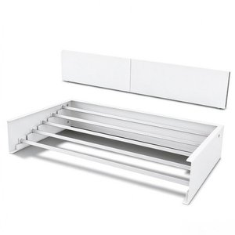
번호 d015
빨래 널 곳 없는 집 · 득템송
벽걸이 접이식 빨래건조대(벽고정형)
평소엔 벽에 얇은 선반처럼 붙어 있다가 아래로 당기면 빨래봉이 펼쳐지고, 다 마르면 위로 올려 접어 두면 돼요.
쿠팡에서 보기영상에 나온 신기한 아이템을 최신 순으로 모았어요
이 페이지는 쿠팡 파트너스 활동의 일환으로, 이에 따른 일정액의 수수료를 제공받습니다. 가격과 재고는 쿠팡에서 확인해 주세요.
영상 끝에 나온 번호를 넣으면 그 상품으로 바로 가요
맞는 상품이 없어요. 번호를 다시 확인해 주세요

빨래 널 곳 없는 집 · 득템송
평소엔 벽에 얇은 선반처럼 붙어 있다가 아래로 당기면 빨래봉이 펼쳐지고, 다 마르면 위로 올려 접어 두면 돼요.
쿠팡에서 보기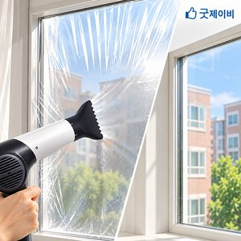
창문 틈 찬바람 · 득템송
창틀에 테이프를 두르고 투명 비닐을 붙인 뒤 드라이어 바람을 쐬면 비닐이 팽팽해지면서 유리와 사이에 공기층이 생겨 찬바람을 막아 줘요.
쿠팡에서 보기케이크 깜짝템 TOP5 · 5위
평범한 얇은 초인데 불을 붙이면 초마다 파랑·초록·분홍 불꽃이 피어요. 케이크가 순식간에 무지개가 돼요.
쿠팡에서 보기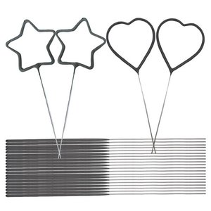
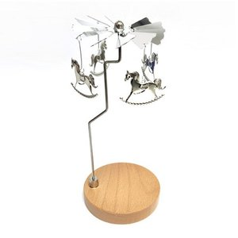
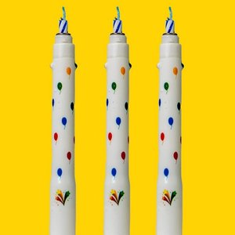
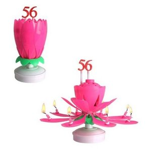
케이크 깜짝템 TOP5 · 1위
봉오리 끝에 불을 붙이면 꽃잎이 활짝 펴지며 돌고 생일 축하 노래가 나와요. 케이크 위 작은 깜짝쇼예요.
쿠팡에서 보기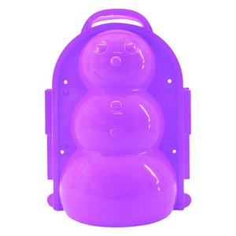
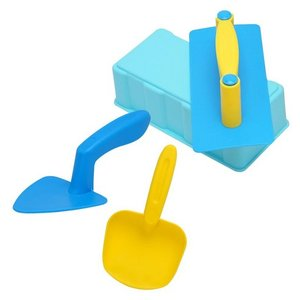
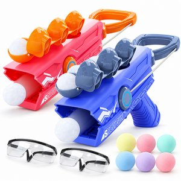
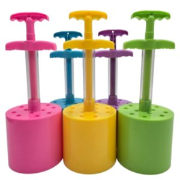
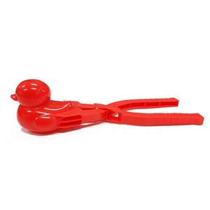
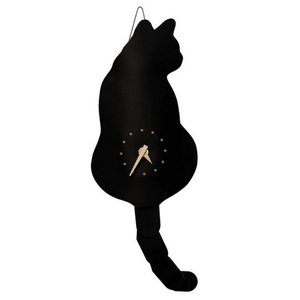
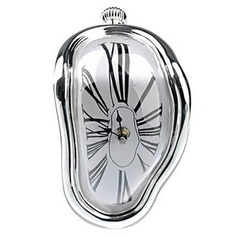
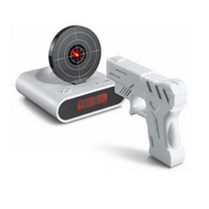
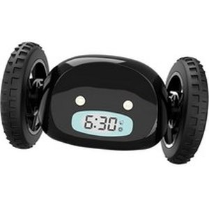
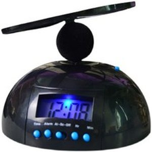
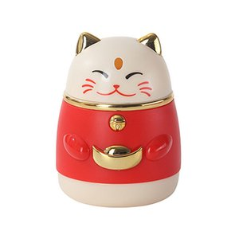
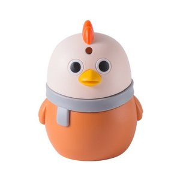
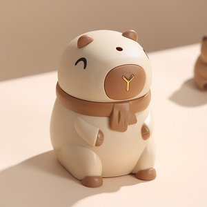
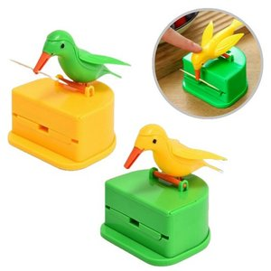
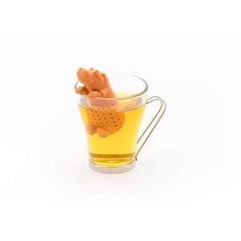
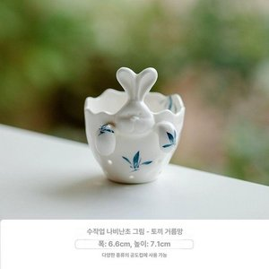
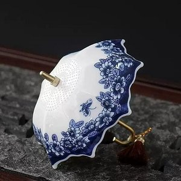
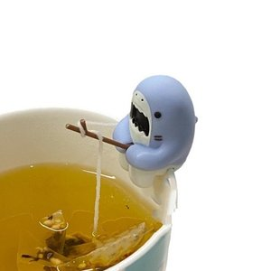
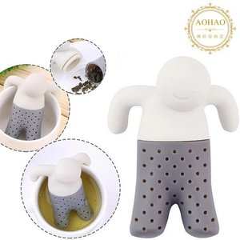
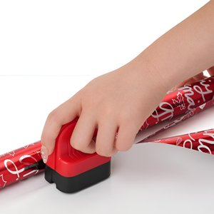
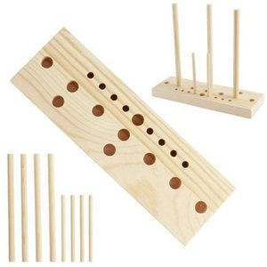
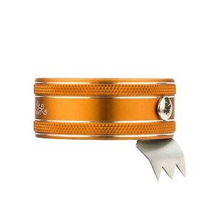
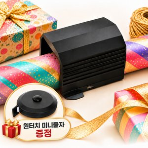
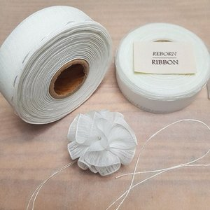
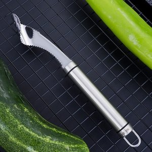
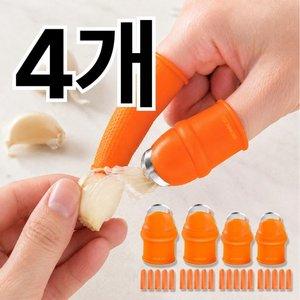
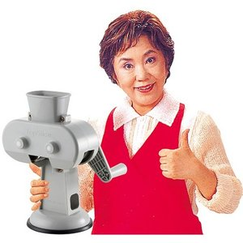
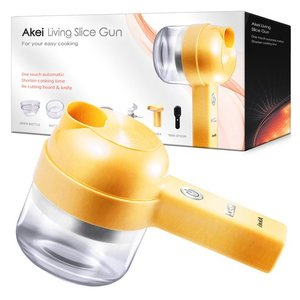
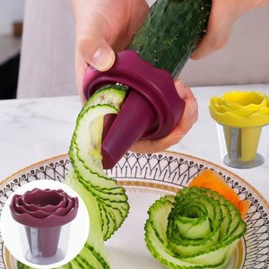
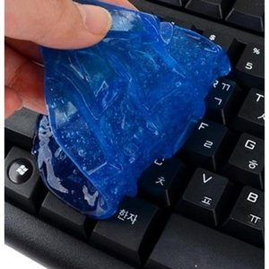
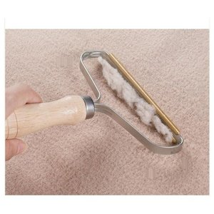
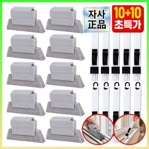
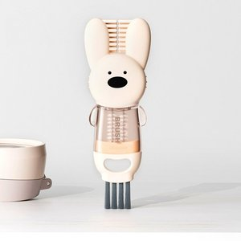
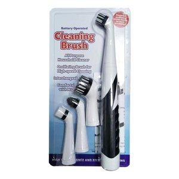
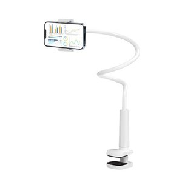
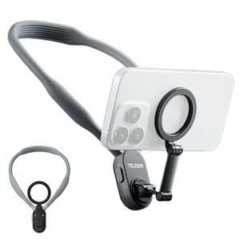
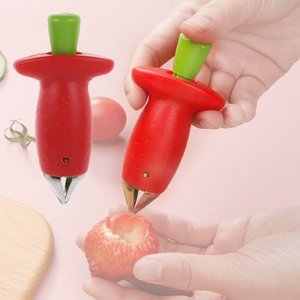
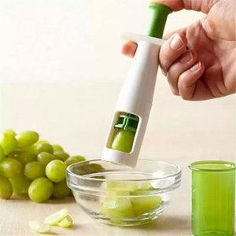
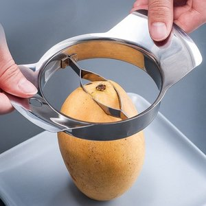
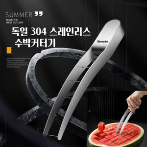
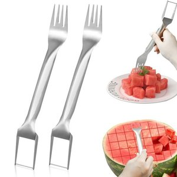
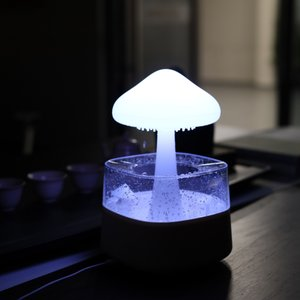
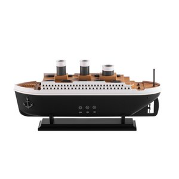
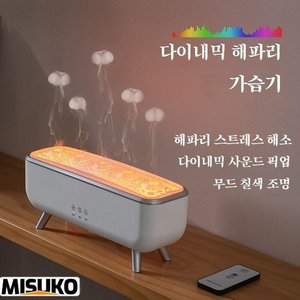